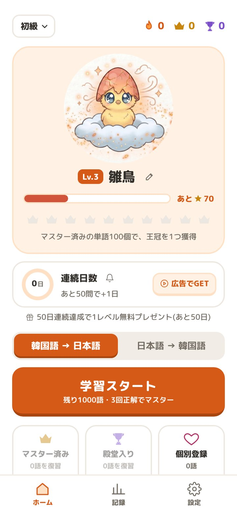
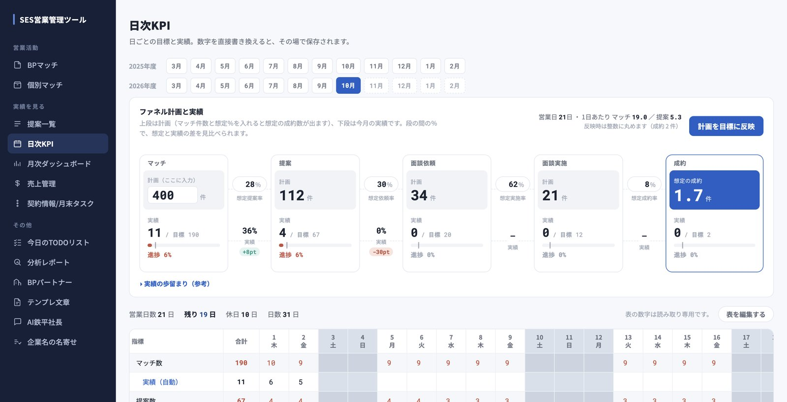
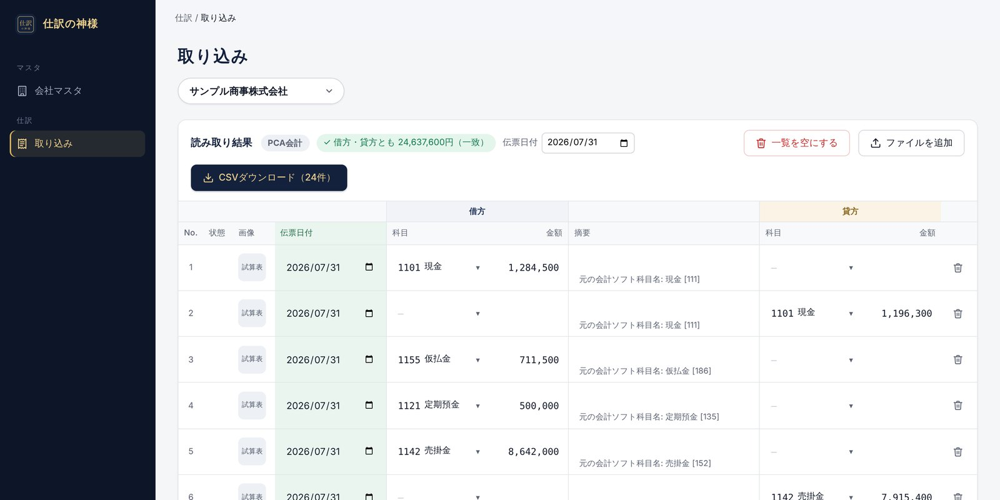
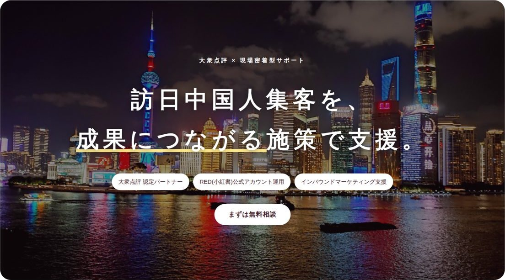

iOSアプリ ・ 教育
ハングルの卵
卵を育てながら覚える韓国語単語アプリ。3レベル3,000語、すべての単語に例文とネイティブ音声つき。
- 担当
- 企画・デザイン・開発・App Store申請まで一人で担当
- 期間
- リリースまで2週間以内
- 技術
- JavaScript / Capacitor / Swift

iOSアプリ・業務システム・Webサイトの制作実績
企画から開発、公開まで一人で担当しています。
App Storeで公開中のアプリは2本です。
案件と要員のメールを自動で読み取り、スキルの一致率でマッチング。提案から成約までの進捗も管理します。

レシートを撮るだけで日付・金額・摘要を読み取り、会計ソフト用の仕訳CSVを作成します。

訪日中国人向け集客支援会社のサイト。文言・写真・FAQを管理画面から更新できるWordPressテーマとして制作。

営業の現場を知る、
開発者です。
IT事業会社で営業、営業企画、事業企画を経験。現在はSES企業で営業と事業管理に携わりながら、個人でアプリと業務システムを開発しています。
現場の業務と数字を知っているので、「何を作れば仕事が楽になるか」から
一緒に考えられます。開発にはAIを活用し、企画からリリースまでを短期間で形にします。
iPhoneアプリの企画・開発から、App Storeの申請と審査対応まで。
メール・Excel・紙で行っている業務の自動化と、データの集計・出力。
会社サイトやLPの制作。公開後に自分で
更新できる仕組みまで。
開発だけ、設計からなど、ご希望の範囲で承ります。企画から公開までの一貫対応もご相談ください。
ご相談やご質問には、原則1日以内にお返事します。
内容に応じてご提案します。まずはお気軽にご相談ください。
内容が固まっていない段階でも大丈夫です。お見積りは無料です。